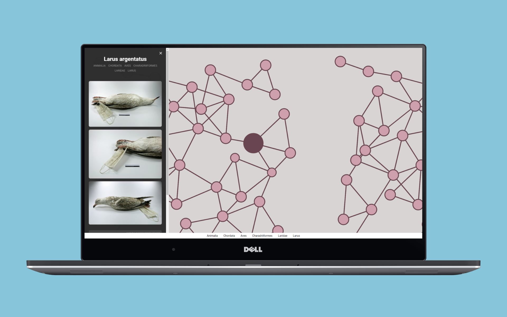
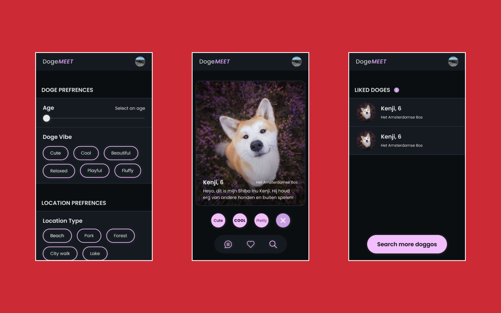
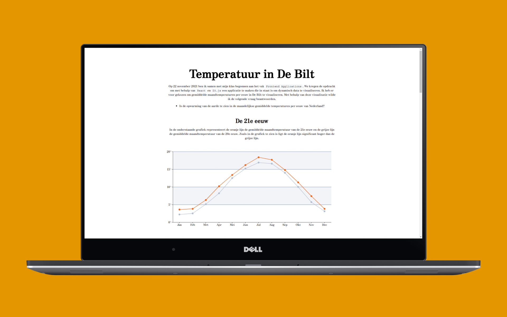
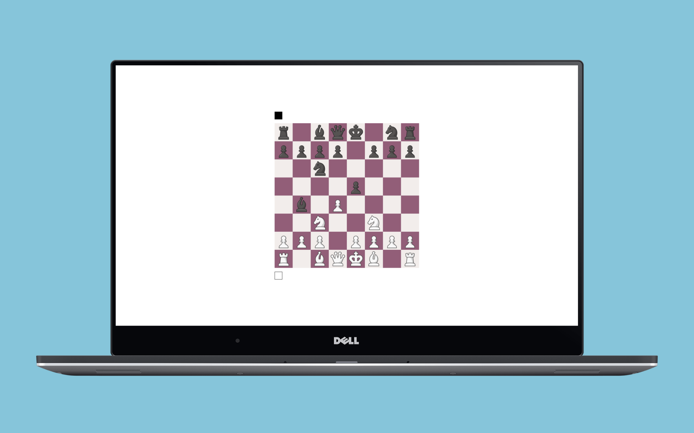
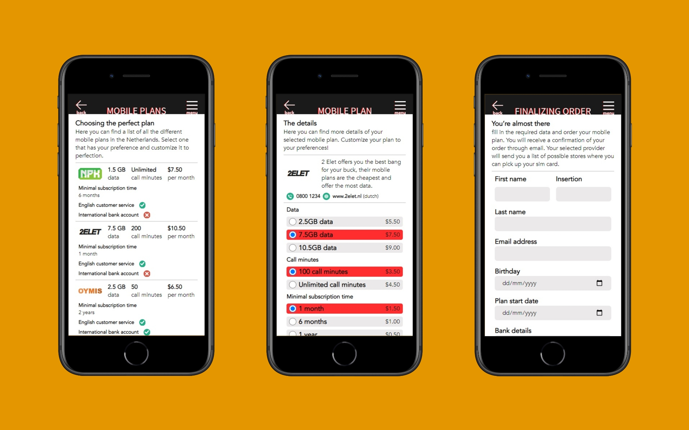

BERGERVOET
Hi, mijn naam is Stein en ik ben derdejaarsstudent Communicatie en Multimedia Design aan de hogeschool van Amsterdam. Mijn interesse ligt bij het ontwikkelen en bouwen van websites. Kortom, ik vind Frontend helemaal te gek!
BEKIJK MIJN WERKEen aantal projecten waaraan ik heb gewerkt in de afgelopen drie jaar
Projecten
-

Een interactieve datavisualisatie voor Naturalis en Q42
Een interactieve datavisualisatie waarmee gebruikers de gedigitaliseerde collectie van het Naturalis kunnen ontdekken.
-

DogeMeet
Een matching applicatie waarmee gebruikers elkaars honden kunnen liken om vervolgens met elkaar te kunnen chatten.
-

Een reeks digitale datavisualisaties
Een reeks websites die ieder een andere dataset visualiseren. De laatste twee websites zijn gevisualiseerd met behulp van D3.js.
-

Multiplayer chess (WIP)
Een website waarmee twee gebruikers een potje tegen elkaar kunnen schaken.
-

Stein's Pokédex
Een Pokédex gemaakt met HTML, CSS, vanilla JavaScript en de PokéAPI.
-

Nederlandse providers voor internationale studenten
Een dummy mobiele website die buitenlandse studenten in Amsterdam helpt bij het kiezen van een mobiel abonnement.
Wie ik ben en wat kan ik
Over mij
-
Mijn naam is Stein Bergervoet. Ik ben momenteel derdejaarsstudent Communicatie en Multimedia Design aan de hogeschool van Amsterdam. Hier heb ik veel geleerd over onderwerpen zoals user experience, visueel ontwerp en web development.
Deze tekst moet anders. Bekijk mijn cv hier.
E-mail, whatsapp of linkedin
Contact
Do you like what you see? Neem dan gerust contact met me op.
Mail me op stein.bergervoet@gmail.com.
Ik ben ook altijd bereikbaar via WhatsApp of LinkedIn.